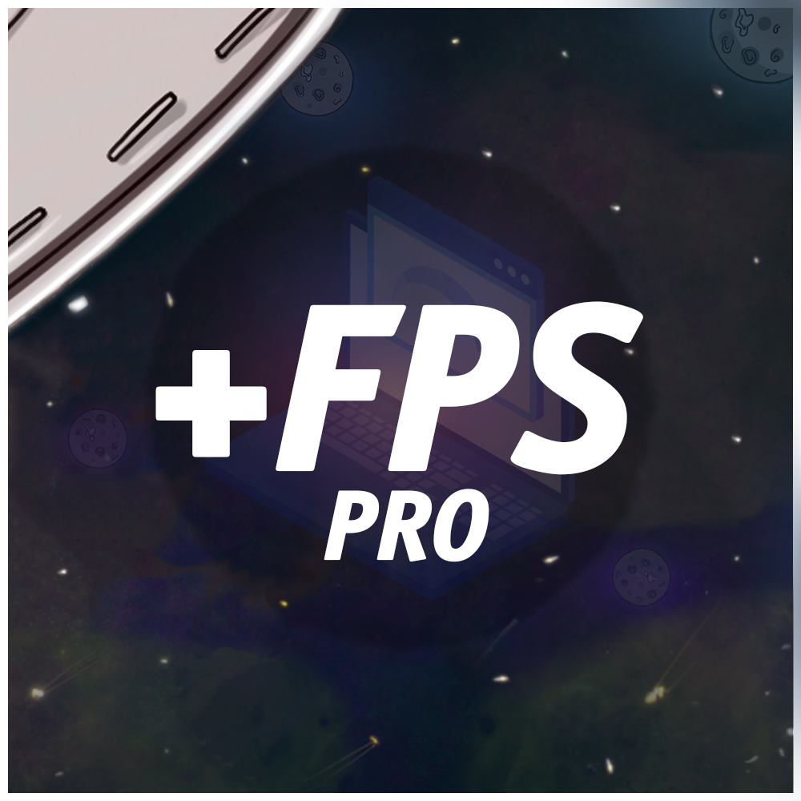
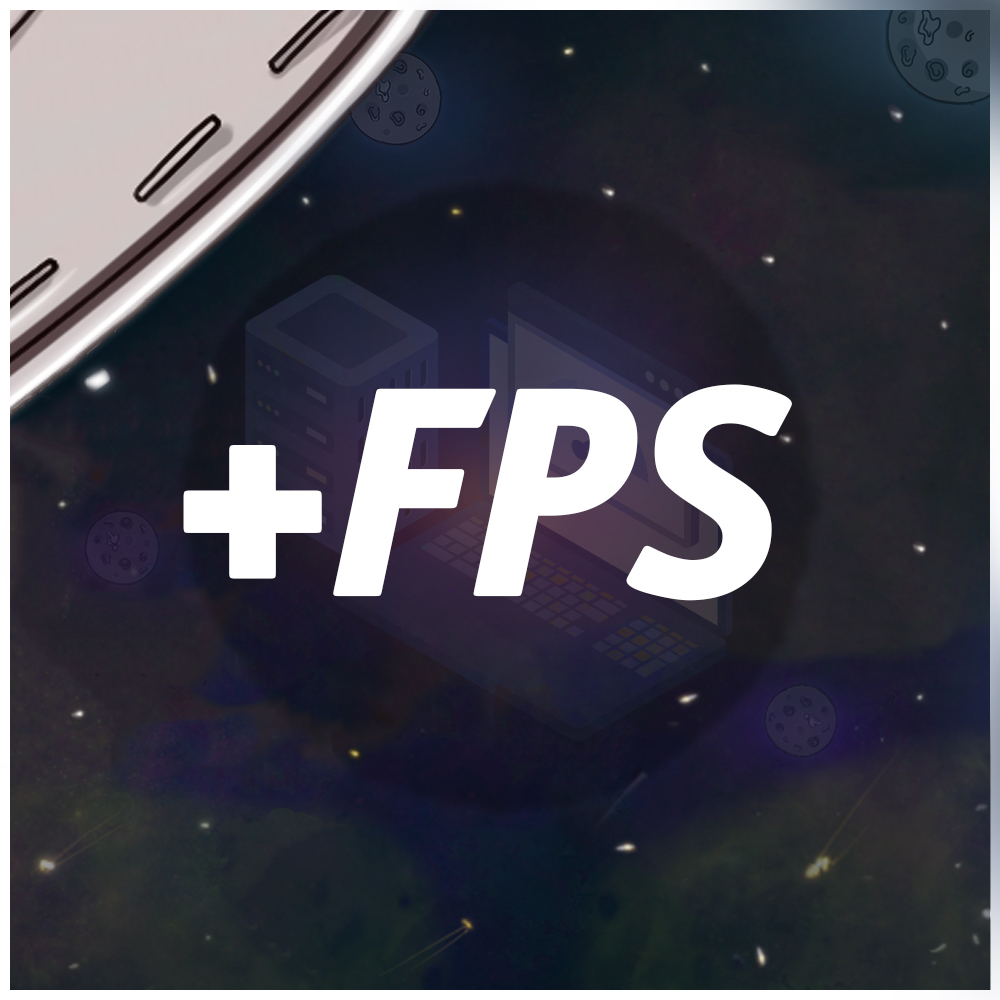

+FPS PRO 400P
Работа происходит через удаленный доступ.
Не будет работать: Rust (официальная версия), Valorant, Faceit, Rainbow, Fortnite, Pubg.
Достигается путём установки и настройкой систем основанных на ядрe Linux.
Например CS:GO и Dota 2 прекрасно работают и имеют больший fps чем в Windows, а также многие другие игры.
Приобретая услугу ты получаешь:
1. Полностью настроенную, работоспособную новую систему (Linux);
2. Повышенный FPS и стабильность;
3. Установку любых нужных тебе программ;
4. Круглосуточную поддержку, консультацию по всем вопросам;
5. Гарантию от 60FPS.
За подробностями обращайся в сообщество

+FPS 600P
Работа происходит через удалённый доступ.
Подходит для всех игр.
Хуже чем +FPS PRO
Приобретая услугу ты получаешь:
1. Полностью настроенную, работоспособную новую систему (Windows);
2. Повышенный FPS и стабильность;
3. Установку нужных тебе программ*;
4. Круглосуточную поддержку, консультацию по всем вопросам;
5. Гарантию от 60FPS.
А, да, в наших действиях ты не найдёшь убивание системы твикерами и подобную чепуху идиотов с ютуба, или контор говнобустелок.
За подробностями обращайся в сообщество
Работа происходит через удалённый доступ.
• Процессор:
Сокет: FM2+/AM4(Ryzen1000/2000/3000G)/1156/1155/1150 — 250
Сокет: 775/1356/1366/2011/2011-3 — 300
Сокет: AM2/AM2+/AM3/AM3+ — 350
Сокет: AM4(Ryzen3000/4000/5000)/1151/1151v2/1200/1700 — 350
*P.S - Не гонибельные Intel'(Non K) процессоры все равно позволяют себя частично разгонять в определенных рамках + осуществляется андервольт(Уменьшение потребления и нагрева процессора)
• ОЗУ:
Сокет: AM2/AM2+/AM3/AM3+ — 400
Сокет: Остальные — 350
*P.S - Разгон процессора и памяти делается исключительно совместно.
Работа процессора и памяти очень сильно переплетены между собой и разгон одного без второго не имеет смысла.
• Видеокарта:
Nvidia: 300
AMD: 250
*P.S у некоторых видеокарт есть возможность дополнительного разгона через модифицирование микропрошивки. Например прошивка RX550 в RX560 или расширение лимитов частот, редактирование таймингов видеопамяти, снятие лимитов мощности на GTX1060 и прочие аппаратно-программные твики.
Каждый случай уникален, дополнительно от 250, к стоимости разгона GPU.
► 100% безопасный разгон.
• Разгон Видеокарты слетает после услуги +FPS или переустановки операционной системы.
• Восстановление разгона после услуги +FPS бесплатно в течении 2 недель, после оплаты услуг по разгону.